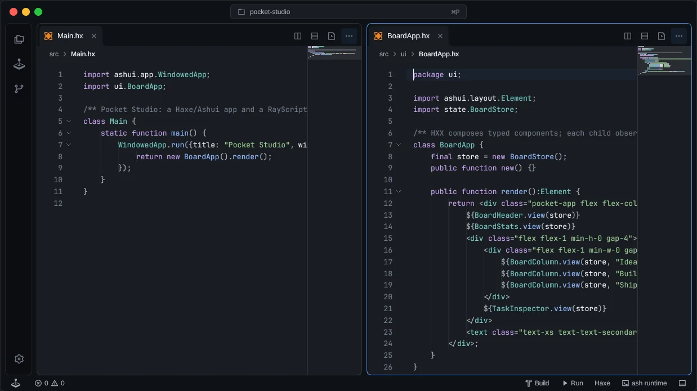

Haxe, in focus.
Follow definitions, explore your outline and dependencies, and get language-server feedback where you write.
Explore the editor
YOUR HAXE DX JUST GOT A BOOST.
Built with Haxe, for a smoother Haxe experience.
From the first line
to the next thing you ship.
Open source. Made for your desktop and the web.
TAKE A LOOK AROUND

LESS FRICTION. MORE FOCUS.
Follow definitions, explore your outline and dependencies, and get language-server feedback where you write.
Explore the editorBuild and run projects, inspect Git changes, open a terminal and preview Markdown or images beside your code.
See the workflowArrange split editors, shape a theme, write RayScript extensions and make the workspace your own.
Build an extensionRAYZOR LANGUAGE SERVER
Macro-heavy Haxe deserves a deeper look. Rayzor follows nested macro expansion and exposes the expanded Haxe source at macro invocations, helping you understand the code your macros produce.
As RayDE’s default Haxe language server, it also brings completions, hover documentation, signature help, definitions and diagnostics to your editor. On desktop or in a browser, Rayzor runs where your workspace lives.
GET IN FLOW WITH YOUR AMIGO.
Invite a teammate into your flow. Write code together, see each other’s carets and selections, and follow along when it’s their turn to drive.
Get started with JamLive edits, shared selections and names beside each participant’s cursor. Your undo history stays yours.
See their selection and viewport while they explain. Start editing or navigating to take the lead again.
Keep a history diff beside your editor to see changes from the start of the Jam, with participant names on their lines.
Available in the local Jam preview. See the guide for connecting another machine.
KEEP GOING
Get a desktop build or start from source.
For a quick look, the browser demo is right above.